ГОСУДАРСТВЕННЫЙ АГРОПРОМЫШЛЕННЫЙ КОМИТЕТ СССР
ОТДЕЛ ПО КАПИТАЛЬНОМУ СТРОИТЕЛЬСТВУ И РЕКОНСТРУКЦИИ
ЦНИИЭПсельстрой
ИНСТРУКЦИЯ
НА
СТРОИТЕЛЬСТВО ТЕПЛОВЫХ СЕТЕЙ
БЕСКАНАЛЬНЫМ СПОСОБОМ С ИЗОЛЯЦИЕЙ ПОРОПЛАСТОМ
НА ОСНОВЕ СМОЛЫ СФЖ-5М
ВСН 36-86
МОСКВА-1987
РАЗРАБОТАНЫ И ВНЕСЕНЫ:
Центральным научно-исследовательским, экспериментальным и проектным институтом по сельскому строительству (ЦНИИЭПсельстроем) Госагропрома СССР
Директор института Л.Н. Ануфриев
Заведующий лабораторией КБМ инженерного
оборудования и индустриализации
спецмонтажных работ Г.С. Хмелевский
СОГЛАСОВАНЫ:
Заместитель начальника подотдела
подрядных организаций и хозспособа
Госагропрома СССР В.И. Резников
Начальник сектора планирования
и координации научно-технических
и конструкторских работ Г.Н. Злобин
УТВЕРЖДЕНЫ:
Отделом по строительству и реконструкции
Госагропрома СССР
Заместитель начальника Ю.Б. Котов
Введены в действие с 1 января 1987 г.
«Инструкция на строительство тепловых сетей бесканальным способом с изоляцией поропластом на основе смолы СФЖ-514» предназначена для организаций системы Госагропрома СССР.
Разработана впервые ЦНИИЭПсельстроем.
Инструкцию разработали канд.техн.наук Г.С. Хмелевский, инженеры Г.С. Минченко, В.Э. Мочалкина при участии кандидатов технических наук А.А. Гаспаряна, В.И. Новгородского, инженеров Э.И. Берлина, А.В. Машлыкиной.
|
Госагропром СССР Отдел по капитальному строительству и реконструкции |
Ведомственные строительные нормы |
ВСН 36-86 |
|
Инструкция на строительство тепловых сетей бесканальным способом с изоляцией поропластом на основе смолы СФЖ-514 |
Вводятся впервые |
1. Общие указания
1.1. Инструкция предназначена для организаций Госагропрома СССР при монтаже тепловых сетей из трубопроводов диаметром до 219 мм, рабочим давлением до 16 кгс/см2 и температурой теплоносителя до 15°С, изолированных фенольным поропластом на основе смолы СФЖ-514 (поропласт).
1.2. Изоляция теплопроводов осуществляется способом холодного формования в соответствии с ТУ 10-69-363-86 «Теплопроводы с изоляцией из поропласта на основе смолы СФЖ-514 и изделия» (опытная партия) и Рекомендациями по выпуску теплопроводов с изоляцией на основе смолы СФЖ-514 (технологический регламент)».
1.3. При бесканальной прокладке тепловых сетей следует использовать стальные электросварные прямошовные трубы по ГОСТ 10704-76*, бесшовные горячекатаные ГОСТ 8732-78*, ГОСТ 8731-74*, удовлетворяющие требованиям «Правил устройства и безопасной эксплуатации трубопроводов пара и горячей воды» Госгортехнадзора СССР и СНиП II-Г.10-73* (СНиП II-36-73*) Ч.II. Раздел Г, гл. 10 «Тепловые сети. Нормы проектирования»
|
Внесены Центральным научно-исследовательским, экспериментальным и проектным институтом по сельскому строительству (ЦНИИЭПсельстроем) |
Утверждены
Отделом по капитальному строительству и реконструкции Госагропрома СССР |
Срок введения
в действие |
1.4. При бесканальной прокладке трубопроводов, изолированных фенольной изоляцией обязательной составной частью конструкции теплопровода является противокоррозионное покрытие стальных труб.
1.5. Проектирование и строительство бесканальных тепловых сетей осуществляются согласно СНиП II.-Г.10-73* (СНиП II-36-73*) «Тепловые сети. Нормы проектирования, СНиП 3.05.03-85 «Тепловые сети» и настоящей Инструкции.
1.6. Тепловые сети с изоляцией из фенольного поропласта прокладываются в сухих, маловлажных и в насыщенных водой грунтах с устройством попутного дренажа.
Бесканальная прокладка в набухающих от размокания грунтах, в грунтах II типа просадочности и в районах сейсмичностью 8 баллов и выше не допускается.
2. Конструкции теплопроводов, изолированных фенольным поропластом.
2.1. Для индустриального строительства тепловых сетей заводы должны выпускать:
- трубы стальные, изолированные поропластом;
- скорлупы прямые для изоляции сварных стыков;
- скорлупы изогнутые для углов поворота (отводы);
- изолированные вкладыши с опорными фланцами для неподвижной опоры.
2.2. Конструкция теплопровода состоит из стальной трубы с нанесенным на нее противокоррозионным покрытием, теплоизоляционного слоя, гидроизоляционного и защитно-механического покрытия (исключая торцы труб), (рис. 1)
Рис. 1. Конструкция теплопровода
|
Ду, (мм) |
Дн, (мм) |
Диз, (мм) |
Масса 1 м трубы с изоляцией, кг |
|
50 |
57 ´ 3 |
137 |
7,4 |
|
70 |
76 ´ 3 |
166 |
10,6 |
|
80 |
89 ´ 3 |
189 |
14,0 |
|
100 |
108 ´ 3,5 |
208 |
16,8 |
|
125 |
133 ´ 3,5 |
243 |
20,2 |
|
150 |
159 ´ 4,5 |
279 |
28,2 |
|
200 |
219 ´ 5 |
339 |
49,2 |
2.3. В качестве противокоррозионного покрытия рекомендуются 4 варианта, из которых варианты I и II наиболее долговечны:
I вариант - стеклоэмалевое покрытие марок 105Т, 64,/64, 596, 13-Ш, толщиной 500-600 мкм по ТУ ВНИИСТ;
II вариант - металлизационно-лакокрасочное покрытие из алюминия марок АТ, АТП, АМ, СВ-А5 с толщиной 200 мкм по ТУ 69-220-82 с пропиткой лакокрасочным материалом ЭП-969, ТУ 10-1985-84 или К0-835, ТУ 6-02-867-75 (приложение 2);
III вариант - эпоксидное покрытие на основе эмали ЭП-969, 2 слоя толщиной не менее 100 мкм (приложение 1);
IV вариант - при конструкции «труба в трубе» с толщиной полиэтилена 4-5 мм и надежной герметизации стыков - покрытие на основе эпоксидной шпатлевки ЭП-0010 (ГОСТ 10277-76) или краски ВТ-177 (ОСТ 6-10-426-79) толщиной не менее 60 мкм, 2 слоя.
I вариант - продукт ВАГ-3, ТУ 6-05-1116-78;
II вариант - бензосульфокислота (БСК), ТУ6-14-25-78;
ортофосфорная кислота (ОФК), ГОСТ 10678-76;
этиленгликоль (ЭГ) марок А, Б, В ГОСТ 10164-75 и ГОСТ 19710-83;
поверхностно-активное вещество ОП-7 или ОП-10 ГОСТ 8433-81;
алюминиевая пудра ПАП-1, ПАП-2 ГОСТ 5454-71.
После отверждения поропласта величина водородного показателя рН жидкой фазы (при полном водопоглощении 25-30% по массе) не должна быть ниже 2.
I вариант - полиэтилен высокого давления марок 102-02К и 153-02К ГОСТ 16337-77;
II вариант - полиэтилен высокого давления марок 102-02К и 153-02К ГОСТ 15337-77; порофор марки 107-ОВАС, ТУ 6-05-361-6-80;
III вариант - битумно-резиновая мастика ГОСТ 15836-79; стеклоткань ГОСТ 19170-73 или стеклосетка СС-1, СС-2, ТУ 6-11-99-75, полимерная липкая лента ПВХ, ТУ 51-456-72, ТУ 6-19-103-78 (теплоноситель не выше 90°С).
IV вариант - битумополимерная мастика, ТУ 401-01-6-83.
Таблица 1
Состав на основе битумополимерной мастики
|
№ п/п |
Наименование компонентов |
ГОСТ, ТУ |
Состав, % по массе |
|
1. |
Битум 70/30 |
45-90 |
|
|
2. |
Битум 90/10 |
40-85 |
|
|
3. |
Крошка резиновая |
ТУ 38-10436-82 |
10-12 |
|
4. |
Гранулы полиэтилена |
ТУ 6-05-041-76 |
0-10 |
|
5. |
Полиизобутилен П-20 |
ТУ 38-103257-80 |
0-5 |
2.6. Прямая скорлупа из поропласта представляет собой полый полуцилиндр длиной 400 мм (рис. 2).
2.7. Изогнутая скорлупа - отвод представляет собой крутоизогнутый под углом 90° полый цилиндр. Размеры представлены в табл. 3.
2.8. Изолированный вкладыш неподвижной опоры представляет собой отрезок изолированной поропластом трубы длиной 100 см с приваренным посередине опорным фланцем, оклеенным сверху пленкой ПИЛ. Опорный фланец должен выступать над изоляцией для того, чтобы можно было надежно заделать элемент в опоре. Размеры см. в табл. 3 (рис. 2).
Рис. 2. Изолированные элементы тепловых сетей:
1 - стальная труба с антикоррозионным покрытием; 2 - поропластовая теплоизоляция; 3 - гидроизоляционное покрытие; 4 - опорный фланец
2.9. Основные физико-механические показатели поропласта на основе смолы СФЖ-514 представлены в табл. 2
Таблица 2
|
Норма |
||
|
марка 150 |
марка 200 |
|
|
1 |
2 |
3 |
|
Плотность в сухом состоянии, кг/м3 |
не более 150 |
151-200 |
|
Предел прочности при 10% деформации сжатия Мпа (кгс/см2), не менее |
0,35 (3,5) |
0,46 (4,6) |
|
Сорбционное увлажнение за 24 часа при относительной. влажности воздуха 98+2% по массе, не более |
20 |
15 |
|
Водопоглощение при полном погружении образца в воду за 24 часа, %, не более |
35 |
30 |
|
Коэффициент теплопроводности в сухом состоянии при температуре 20°С, Вт/(м,К) в (ккал/(м.ч. °С), не более |
0,052 (0,045) |
0,058 (0,050) |
Таблица 3
|
Размеры отводов, мм |
Размеры изолированных элементов для неподвижных опор, мм |
|
|||
|
радиус изгиба осевой линии |
длина изолированной части по оси |
||||
|
упорного фланца |
длина изолированной части |
|
|||
|
57 |
75 |
550 |
270´270 |
600 |
|
|
76 |
100 |
600 |
285´285 |
600 |
|
|
89 |
125 |
640 |
320´320 |
600 |
|
|
102 |
150 |
700 |
360´360 |
600 |
|
|
108 |
150 |
700 |
360´360 |
600 |
|
|
133 |
200 |
780 |
400´400 |
600 |
|
|
159 |
225 |
850 |
430´430 |
600 |
|
|
219 |
300 |
1000 |
520´520 |
600 |
|
3. КОМПЕНСАЦИЯ ТЕМПЕРАТУРНЫХ УДЛИНЕНИЙ
3.1. При проектировании бесканальной теплосети с фенольной теплоизоляцией следует избегать компенсации температурных удлинений с помощью П-образных компенсаторов;
3.2. Компенсация тепловых удлинений должна осуществляться за счет естественной компенсации (изгибов трассы) и осевыми компенсаторами типа КСО или КМ с учетом требований СНиП II.Г.10-73 (СНиП II-36-73*) «Тепловые сети», «Указаний по применению осевых волнистых компенсаторов на тепловых сетях в условиях сельского строительства» и «Альбома узлов для прокладки теплосетей с применением осевых волнистых компенсаторов» (ЦНИИЭПсельстрой, 1983 г.)
3.3. Осевые компенсаторы при бесканальной прокладке устанавливаются по двум схемам. Расстояние между неподвижными опорами устанавливается расчетом. Максимально допустимые расстояния между неподвижными опорами, исходя из условий прочности трубопровода, рекомендуется принимать по табл. 4 (рис. 3). Расчет трубопроводов на прочность производить по справочнику «Бесканальные теплопроводы» под редакцией Р.М. Сазонова, Киев, 1985г.
Таблица 4
|
Схема I, м |
Схема II, м |
|
|
50 |
20 |
40 |
|
70 |
20 |
40 |
|
80 |
20 |
40 |
|
100 |
25 |
50 |
|
125 |
30 |
60 |
|
150 |
40 |
80 |
|
200 |
50 |
100 |
Рис. 3 Схемы установки осевых компенсаторов
3.4. При установке компенсатора по схеме I направляющую опору между компенсатором и неподвижной опорой не устанавливают.
При установке по схеме II необходимо дополнительно поставить направляющую опору.
Рис. 4. Узел примыкания трубопровода с фенольной теплоизоляцией к каналу с подвесной изоляцией
3.5. Места присоединения компенсаторов к трубопроводу и сами компенсаторы устанавливаются с подвесной изоляцией. Узел примыкания подвесной изоляции к фенольной показан на рис. 4.
3.6. При вынужденном применении П-образных компенсаторов расчет производить согласно типовой серии 4.903-4 «Бесканальная прокладка тепловых сетей с изоляцией из битумоперлита при диаметре трубопроводов Ду 50-500 мм» (приложение 3).
4. ОПРЕДЕЛЕНИЕ ТОЛЩИН ОСНОВНОГО СЛОЯ ТЕПЛОИЗОЛЯЦИОННОЙ КОНСТРУКЦИИ
4.1. Расчет требуемой толщины тепловой изоляции для бесканальной прокладки тепловых сетей производится в соответствии с ВСН 399/79 ММСС СССР «Нормы тепловых потерь при бесканальной прокладке тепловых сетей», разработанных ВНИПИ Теплопроект с учетом технических условий на прокладку тепловых сетей.
4.2. Расчетные потери тепла определяются в зависимости от района строительства, среднегодовой температуры грунта, температуры теплоносителя в подающем и обратном трубопроводах, глубин заложения и числа часов работы трубопроводов.
4.3. Теплотехнические характеристики грунтов определяются по климатологическим справочникам СССР.
В данном случае они обобщенно представлены в табл. 5, в которую включены все основные виды грунтов, встречающихся на территории СССР. Для расчета принят тип грунта средней влажности.
4.4. Стоимость тепловой энергии следует принимать от 11 до 21 руб/Гкал, в соответствии с указаниями Госстроя СССР ИИ-4448-19/5 от 06.09.84г. «О расчетах стоимостных показателей топливно-энергетических ресурсов на период до 2000 года» (табл. 6).
Таблица 5
Значения коэффициента теплопроводности грунтов в зависимости от его вида, объемной массы и влажности
|
Объёмная масса сухого грунта, кг/смЗ |
Классификация грунтов по влажности |
Коэффициент теплопроводности грунта с учетом влажности. Вт (м.оС) |
|
|
Глинистые и суглинки (W = 5%) |
1600 |
Относительно сухой |
0,87 |
|
2000 |
1,74 |
||
|
Глинистые и суглинки (W = 10-20%) |
1600 |
Влажный |
1,74 |
|
2000 |
2,34 |
||
|
Глинистые и суглинки (W = 23,8%) |
1600 |
Водонасыщенный |
1,86 |
|
Пески и песчаные (W = 5%) |
1600 |
Относительно сухой |
1,10 |
|
2000 |
2,03 |
||
|
Пески и песчаные (W = 15%) |
1600 2000 |
Влажный |
1,9 |
|
Пески и песчаные (W = 23,8%) |
1600 |
Водонасыщенный |
2,4 |
|
2000 |
3,4 |
Примечание. Так как на большей части территории страны почвы песчаные, глинистые и суглинки (сухие и влажные), для практических расчетов принят средний коэффициент теплопроводности грунтов l = 1,74 Вт/(м.°С).
4.5. Тепловую изоляцию на основа фенолформальдегидной смолы СФЖ-514 с коэффициентом теплопроводности 0,052-0,058 Вт/(м.°С) рекомендуется применять в северных и северо-восточных регионах страны, где использование других утеплителей потребует большого увеличения толщин теплоизоляции теплопроводов, расхода материалов, средств и трудозатрат.
4.6. Требуемая толщина утеплителя из фенольного поропласта для изоляции трубопроводов в зависимости от района строительства и диаметра трубопровода определяется по таблице 7.
4.7. Определение требуемой толщины тепловой изоляции для районов, не указанных в таблице, или иных параметров следует производить по методике, приведенной в примере расчета.
Таблица 6
Значения стоимостных оценок топлива и тепловой энергии по основным экономическим зонам страны на период до 2000 года для расчетов термического сопротивления ограждающих конструкций и тепловой изоляции
|
Стоимость котельно-печного топлива, руб/тут |
Стоимость тепловой энергии |
|||
|
уголь |
газ |
руб/Гкал |
руб/Мвт |
|
|
1. Европейские районы СССР |
50 |
60 |
15 |
13 |
|
2. Урал |
43 |
62 |
14 |
12 |
|
3. Казахстан |
41 |
50 |
14 |
12 |
|
4. Средняя Азия |
42 |
51 |
15 |
13 |
|
8. Западная Сибирь |
35 |
43 |
13 |
11 |
|
6. Восточная Сибирь |
20 |
- |
11 |
9,5 |
|
7. Дальний Восток |
60 |
72 |
21 |
18 |
Пример расчета
Требуется определить толщину тепловой изоляции трубопроводов dиз при бесканальной прокладке тепловых сетей.
Район
строительства - Пензенская область, территориальный район № 4, материал
изоляции - фенольный поропласт с коэффициентом теплопроводности lиз = 0,052 Вт/(м×°С). Среднегодовая температура
грунта на глубине заложения труб tгр = 6°С. Глубина заложения труб h = 0,8 м,
расстояние между трубами b = 0,045м. Себестоимость тепловой
энергии составляет для данного района 13 руб/Мвт. Наружный диаметр
трубопроводов Дн. = 0,108 м, среднегодовая температура теплоносителя
в подающей трубе 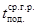 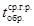
Расчет толщины изоляции, одинаковой для подающего и обратного трубопроводов, производится по формуле
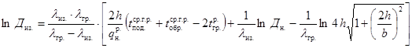
где Диз. - диаметр изолированного трубопровода, м;
lиз. -
теплопроводность изоляционного материала, Вт/(м×°С);
lгр.- теплопроводность грунта, Вт/м×°С);
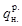
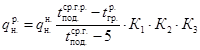
где 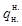
К1 - коэффициент, учитывающий влияние на нормы тепловых потерь изменения стоимости теплоизоляционной конструкции в зависимости от района строительства, принимается по табл. 3 ВСН 399-79 ММСС СССР;
К2 - коэффициент, учитывающий влияние изменения себестоимости тепла на нормы тепловых потерь, принимается по табл. 4 ВСН 399-79 ММСС СССР;
K3 - коэффициент, учитывающий влияние на нормы тепловых потерь изменения себестоимости тепла, принимается по табл. 5 ВСН 399-79 ММСС СССР;
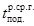
- расчетная среднегодовая температура теплоносителя на обратном трубопроводе, °С;
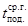
tгр.- расчетная среднегодовая температура грунта на глубине заложения трубопровода, °С;
Дн.- наружный диаметр подающего трубопровода, м;
h - глубина заложения оси трубопроводов от поверхности земли, м;
b - расстояние между трубами, м.
При
определении расчетных норм тепловых потерь для обратного трубопровода в формулу
4.2
подставляем соответствующие температуры для обратного трубопровода и 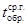
Таблица 7
Требуемая толщина тепловой изоляции из фенольного поропласта на основе смолы СФЖ-514 «А» для тепловых сетей, прокладываемых в грунтах с lгр = 1,74 Вт/(м×°С).
|
Теплопроводность изоляции Вт/(м. оС) |
Стоим. тепла pyб/Мвт |
Наружный диаметр трубопроводов, мм |
||||||||
|
32 |
57 |
76 |
89 |
108 |
133 |
159 |
219 |
|||
|
1 |
2 |
3 |
4 |
5 |
6 |
7 |
8 |
9 |
10 |
11 |
|
Владимирская, Калужская, Курская, Ленинградская, Липецкая, Московская, Новгородская, Пензенская, Тульская в Ярославская области |
0052 |
13 |
30 |
40 |
50 |
50 |
60 |
60 |
65 |
65 |
|
0058 |
“ |
40 |
50 |
60 |
60 |
65 |
65 |
70 |
70 |
|
|
Ижевская, Курганская, Пермская, Тюменская, Оренбургская и Челябинская области |
0052 |
12 |
35 |
40 |
45 |
50 |
50 |
60 |
65 |
65 |
|
0058 |
“ |
40 |
50 |
50 |
55 |
60 |
65 |
70 |
70 |
|
|
Омская, Томская, Новосибирская области, Красноярский край |
0052 |
9,5 |
30 |
35 |
40 |
40 |
45 |
50 |
55 |
55 |
|
0058 |
“ |
35 |
40 |
45 |
50 |
50 |
55 |
60 |
60 |
|
|
Актюбинская, Карагандинская, Кокчетавская, Кустанайская, Павлодарская, Семипалатинская, Целиноградская области, Алтайский край |
0052 |
12,0 |
30 |
40 |
45 |
50 |
55 |
60 |
65 |
65 |
|
0058 |
12,0 |
40 |
50 |
50 |
55 |
60 |
65 |
70 |
7 |
|
|
Украинская ССР (Киевская, Львовская, Полтавская, Черниговская, Харьковская и др. области) |
0052 |
13 |
30 |
40 |
45 |
45 |
50 |
50 |
55 |
55 |
|
0058 |
“ |
40 |
45 |
50 |
50 |
55 |
55 |
60 |
60 |
|
|
Архангельская область, Белорусская ССР (Брестская, Гомельская, Гродненская, Витебская и Минская области) |
0052 |
13 |
35 |
40 |
50 |
50 |
55 |
55 |
60 |
60 |
|
0058 |
“ |
40 |
45 |
55 |
60 |
65 |
65 |
70 |
70 |
|
|
Азербайджанская CCP, Грузинская, Таджикская, Туркменская Узбекская |
0052 |
13 |
25 |
30 |
35 |
40 |
40 |
45 |
50 |
50 |
|
0058 |
“ |
30 |
35 |
40 |
45 |
50 |
50 |
55 |
55 |
|
|
Литовская, Латвийская союзные республики |
0052 |
13 |
30 |
35 |
40 |
40 |
50 |
50 |
60 |
60 |
|
0058 |
“ |
40 |
45 |
50 |
50 |
60 |
60 |
65 |
65 |
|
|
Астраханская, Волгоградская, Фрунзенская области, Молдавская ССР и Ставрополь |
0052 |
13 |
30 |
35 |
40 |
45 |
50 |
50 |
55 |
55 |
|
0058 |
13 |
35 |
40 |
45 |
50 |
55 |
55 |
60 |
60 |
|
|
Благовещенск, Владивосток, Хабаровск |
0052 |
18 |
40 |
50 |
60 |
65 |
70 |
75 |
75 |
75 |
|
0058 |
“ |
50 |
60 |
65 |
75 |
80 |
85 |
85 |
85 |
|
Примечания. 1. При расчете толщин изоляции потери тепла изолированными трубопроводами определялись при годовом числе часов работы трубопроводов более 5000.
2. За расчетную температуру грунта принималась среднегодовая температура грунта на глубине заложения трубопровода.
3. Принималась среднегодовая температура теплоносителя = 90 оС, = 50 оС.
После определения диаметра изолированного трубопровода определяем толщину изоляции на подающем и обратном трубопроводах:
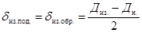
Результаты проведенных расчетов сведены в таблицу 7. По таблице 7 находим заданный район строительства, в данном случае Пензенская область, для которой расчетная толщина тепловой изоляции из фенольного поропласта на основе смолы СФЖ-514 для трубопровода с наружным диаметром Дн. = 0,108 м составляет dиз. = 60 мм.
5. Технология и организация строительства бесканальной прокладки теплосетей
5.1.1. Прокладку бесканальных тепловых сетей с изоляцией поропластом на основе смолы СФЖ-514 производить согласно СНиП 3.05.03-85 «Тепловые сети» и настоящей Инструкции.
5.1.2. При прокладке в насыщенных водой грунтах и в зоне грунтовых вод обязательно устройство попутного дренажа. Конструкция дренажа состоит из дренажной трубы и двухслойного фильтра:
а) гравийного - фракции 3-15 мм (внутренний слой);
б) песчаного - крупнозернистый песок.
5.1.3. В качестве дренажных труб могут применяться асбестоцементные трубы по ГОСТ 1839-72 с муфтовыми соединениями. При отсутствии асбестоцементных труб, а также в агрессивных средах следует применять керамические канализационные трубы по ГОСТ 286-74.
Попутный дренаж должен осуществляться со стороны притока грунтовых вод.
5.1.4. В сухих грунтах основанием под трубопроводы является грунт, подсыпка из местного грунта, уплотненного до плотности с К = 09; в насыпных, заторфованных грунтах, а также торфах устраивается искусственное основание из утрамбованной щебенки, гравия или тощего бетона М25 толщиной не менее 100 мм.
5.1.5. Заглубление теплопроводов от поверхности земли или дорожного покрытия до верха оболочки бесканальной прокладки должно быть не менее 0,7 м.
5.1.6. Бесканальная прокладка тепловых сетей с трубопроводами полной заводской готовности отвечает требованиям индустриализации и производится по следующим этапам:
- разбивка трассы;
- разработка траншей;
- устройство основания и сопутствующего дренажа;
- раскладка и монтаж труб, сварка стыков и их изоляция, засыпка и трамбовка пазух песком;
- устройство неподвижных опор;
- засыпка траншеи.
5.1.7. Земляные работы производятся после разбивки трассы трубопроводов согласно требованиям главы 8 СНиП III-8-76 «Правил производства и приемки работ. Земляные сооружения», СНиП 3.05.03-85 «Тепловые сети».
5.1.8. Поступающие на трассу теплопроводы могут иметь частичные повреждения теплоизоляционного, защитно-механического и гидроизоляционного покрытий. Их последовательно устраняют, используя материалы, приведенные в пунктах 2.4 и 2.5.
Поверхность металла в дефектном месте очищается от грязи, продуктов коррозии, обезжиривается и высушивается. На подготовленную поверхность наносится соответствующее противокоррозионное покрытие.
Ремонт повреждений тепловой изоляция следует производить скорлупами из поропласта, вырезанными по форме повреждения, или заливкой готовой композиции теплоизоляционного материала.
Для ремонта покровного слоя следует использовать самоклеящиеся полимерные ленты, заплаты из полиэтилена. При этом припуск должен составлять не менее 100 мм в каждую сторону.
5.1.9. Укладку теплопроводов проводят посла проверки соответствия отметок дна траншеи проекту; перед укладкой теплопроводов подготовить основание и песок для подбивки.
5.1.10. Спуск теплопроводов с фенольной изоляцией в траншею производят автокраном с помощью «полотенец» типа ПМ-321 (табл. 8) или других захватных приспособлений, которые обеспечивают сохранность изоляционного покрытия. (рис. 5) Строповка теплопроводов тросом за изолированные участки и концы труб запрещена.
От захватных приспособлений трубы освобождают только после закрепления их подбивкой песком.
Таблица 8
|
ПМ-321 |
|
|
Грузоподъемность (максимальная), т |
8 |
|
Диаметр поднимаемого трубопровода, мм |
до 325 |
|
Запас прочности ленты (кратной максимальной грузоподъемности) |
4,35 |
|
Габаритные размеры, мм: |
|
|
длина |
2440 |
|
ширина |
200 |
|
толщина |
10 |
|
Масса, кг |
20,7 |
5.1.11. Во время укладочных работ необходимо следить за целостностью гидротеплоизоляции. Следует учесть, что наиболее опасное сечение возникает в месте соприкосновения изолированного трубопровода с дном траншеи.
5.1.12. Для проведения сварочных работ устраивают приямок длиной 1,0 м и глубиной от нижней грани изоляции трубопроводов 0,7 м на всю длину траншеи. Сварные соединения должны предусматриваться на расстоянии не менее 50 мм от опор и 100 мм от начала изгиба.
Рис.
5. Полотенце мягкое:
1 - пластина; 2 -
лента; 3 - трубопровод
5.1.13. Запас вывезенных на трассу теплоизолированных труб должен обеспечивать бесперебойную работу сборочно-монтажного звена.
5.1.14. Процесс сборки и сварки теплотрассы в нитку производится по следующим этапам: центровка, прихватка и окончательная сварка стыка (рис. 5а, 6);
Рис.
5а. Технологическая схема сварочных работ бригадой из двух сварщиков:
1, 2 - центровка,
прихватка и окончательная сварка стыка; 3 - секция труб; 4 - сварочная
установка
- центровка труб с ниткой теплотрассы осуществляется при помощи наружного центратора. Характеристика наружных и внутренних центраторов приведена в табл. 9.
Таблица 9
|
Диаметр трубопровода, мл |
Масса центратора, кг |
|
|
Наружные центраторы |
||
|
ЦНЭ-8-15 |
89-159 |
7,0 |
|
ЦНЭ-6-21 |
168-219 |
11,7 и 14,7 |
|
ЦНЭ-27-32 |
273-325 |
13,9 и 17,7 |
|
Внутренние центраторы |
||
|
ЦВ-21 |
325 |
205 |
Рис.
6. Технологическая схема сварочных работ бригадой из четырех сварщиков:
1, 3 - центровка и
прихватка стыка; 2, 4 - окончательная сварка стыка; 5 - секция труб; 6 -
сварочные установки
5.2. Изоляцию стыков проводят после зачистки до блеска сварного шва и проверки качества сварки в соответствии с действующими нормами (контроль 5% стыков физическими методами и опрессовка трубопровода). Оснащенность звена приведена в табл. 10.
5.2.1. Согласно требованиям СНиП II.Г.10-73* «Тепловые сети», теплоизолирующие характеристики мест стыков должны быть равными показателям линейных трубных элементов. Соединения труб должны быть полностью герметичными и выдерживать давление не менее 16 кгс/см.
5.2.2. Поверхность стыка и примыкающие к нему неизолированные концы металлических труб следует очистить от шлака, грязи, пыли, наплывов металла с использованием очистных машинок, шлиф-машины или напильников и щеток.
5.2.3. Перед нанесением на стык теплоизоляции на зачищенную поверхность наносится противокоррозионное покрытие по п. 2.3.
Инструкции, соответствующие защитному покрытию линейной части труб.
Таблица 10
Оснащенность звена по изоляции стыков
|
Тип |
Количество |
|
|
Кран-трубоукладчик (автокран) |
Т1224 КС-2561 |
1 |
|
Мягкое полотенце |
ПМ321 |
2 |
|
Передвижной котел |
1 |
|
|
Электрошлифовальная машина |
Ш-230 или Ш-178 |
1 |
|
Лейка для разлива заливочной смеси |
2 |
|
|
Баллон пропановый |
ГОСТ 15860-70 |
1 |
|
Редуктор пропановый |
ГОСТ 51780-73 |
1 |
|
Шланги резиновые |
||
|
Горелка пропановая или паяльная лампа |
||
|
Огнетушитель |
||
|
Материалы |
||
|
Молоток слесарный |
А5, ГОСТ 2310-70 |
1 |
|
Напильник |
ГОСТ 4796-64 |
1 |
|
Нож |
1 |
|
|
Щетка металлическая |
1 |
|
|
Шкурка шлифовальная |
ГОСТ 50009-75 |
1 |
|
Ткань хлопчатобумажная |
||
|
Рукавицы |
5.2.4. Для теплоизоляции стыка рекомендуется использовать сборные скорлупы из поропласта той же объемной массы, что и для прямолинейных участков труб. Допускается применение заливной теплоизоляции во временной опалубке или надвигаемой защитной полиэтиленовой, металлической или асбестоцементной муфте, в которой просверливается заливочное отверстие, закрываемое после заливки. Муфта должна заходить на заводскую изоляцию трубы не менее чем на 10-15 см.
Скорлупы (полуцилиндры) подгоняют и подрезают так, чтобы зазор не превышал 1 - 2 мм.
Закрепляют скорлупы (полуцилиндры) с помощью липкой ленты, бандажами из тонкой проволоки или другими материалами, не имеющими выступающих частей.
5.2.5. Гидроизоляционное покрытие стыка выполняют тем же гидроизоляционным материалом, что и линейную часть теплопровода (по п. 2.5 Инструкции) с перекрытием линейных участков (внахлест) не менее чем на 150 мм. Кроме того, рекомендуется применять соединительные термоусаживающиеся манжеты СТУМ (ТУ 95-1378-85). В этом случае выполняются следующие операции: на концы каждого стыка должны быть надеты по одной защитной полиэтиленовой неусаживающейся муфте и две термоусаживающиеся муфты. Диаметр защитной полиэтиленовой муфты должен быть на 2 - 6 мм больше наружного диаметра линейной полиэтиленовой трубы, длина её на 100 - 200 мм больше длины стыка, толщина стенок не менее 2 мм. Диаметр термоусаживающихся муфт должен быть на 3-10% больше диаметра линейной полиэтиленовой трубы, длина муфт должна составлять не менее 150 мм (рис. 7).
Нахлест на линейную часть трубы должен быть для защитной муфты 50-100 мм, для термоусаживающейся - 75 мм. Затем производится прогрев и тармоусадка муфт, предварительно сняв антиадгезионную внутреннюю пленку.
Рис.
7. Изоляция сварного стыка:
1 - стальная труба;
2 - сварной стык; 3 - поропластовая скорлупа; 4 - защитная полиэтиленовая
труба; 5 - муфта СТУМ
Прогрев и усадку термоусаживающихся муфт производят пламенем ручной горелки. Горелку следует держать на расстоянии не ближе 200 мм от муфты и перемещать пламя возвратно-поступательным движением горелки, не останавливаясь на одном месте и избегая перегрева, загорания и перелома муфты. Пламя горелки сначала должно равномерно прогреть среднюю часть муфты, начиная снизу трубы, далее прогрев перемещается по обе стороны трубы и к её верхней части до тех пор, пока муфта не прижмется своей: средней частью к стыку. Затем прогрев продолжают от середины к краям муфты, избегая появления воздушных пузырей под муфтой. Если на муфте образуются гофры, нагрев этих мест следует прекратить и прогревать соседние участки до натяжения муфты и ликвидации гофр. В случае загорания муфты, прогрев прекращают и загораемое место разравнивают брезентовой рукавицей или прикатывают роликом, желательно из фторопласта.
Допускается применение широких термоустанавливающихся муфт и лент (длиной 600-700 мм), герметизизирующих всю длину стыка; в этом случае защитная полиэтиленовая муфта может быть исключена. Правильно приваренная муфта или лента обеспечивают плотное, равномерное обжатие стыка. Из-под нахлестов муфты на линейный участок трубы должен выступить клей-герметик, муфта не должна иметь вздутий, гофр, матовых пятен, свидетельствующих о перегреве.
Качество сварки определяется визуально.
5.2.6. При выполнении изоляционных работ по соединению элементов теплопровода необходимо соблюдать требования, изложенные в СНиП III-4-80 «Техника безопасности в строительстве» и в «Правилах по технике безопасности при строительстве магистральных трубопроводов» (М., Недра, 1972г.).
5.3. В качестве основной конструкции неподвижной опоры принимается щитовая конструкция, которая представляет собой прямоугольный щит с круглыми отверстиями для пропуска теплопроводов.
5.3.1. Неподвижные опоры следует монтировать из щитовых опор полной заводской готовности либо бетонированием изолированных элементов опор, которые поставляют вместе с трубами (рис. 8, 9).
Рис.
8. Конструкция неподвижной опоры с изолированным элементом:
1 - стальная труба;
2 - фенольная теплоизоляция; 3 - опорный фланец; 4 - арматура; 5 - бетонная
стена
Конструкция щитовой опоры определяется проектом в зависимости от заглубления трубопровода и воспринимаемых опорой усилий.
5.3.2 В местах прохода трубопровода через стенки щитовых неподвижных опор, входы в канал и камеры оставляется зазор для осадки трубопроводов диаметрами 50-100 мм - 30 мм, для диаметров трубопровода 100-200 мм - зазор - 50-70 мм.
Отверстия в плитах, а также гильзы, предусмотренные для прохождения через стенки камер, должны быть надежно заделаны для предотвращения попадания в каналы и камеры грунта и влаги. Деталь заделки трубопроводов в неподвижной опоре и узел примыкания к каналу и камере представлены на рис. 9 и 4.
5.4. Испытание смонтированных теплопроводов производят согласно СНиП 3.05.03-85 в два этапа: предварительным пробным и окончательным давлением гидравлическим или пневматическим способом. Пневматический способ испытания применяется, как правило, в зимнее время.
Рис. 9. Узел прохода трубопровода через железобетонную щитовую опору
6. Транспортные и погрузочно-разгрузочные работы
6.1. При производстве погрузочно-разгрузочных и транспортных работ, а также при складировании теплоизолированных труб необходимо соблюдать ряд дополнительных требований, обусловленных свойствами теплоизоляционных покрытий и направленных на обеспечение полной сохранности.
Погрузку, разгрузку и складирование труб следует производить избегая их соударения, волочения по земле, а также по нижележащим трубам.
6.2. Погрузка и разгрузка труб, а также складирование должны осуществляться с помощью стреловых кранов или кранов-трубоукладчиков, оснащенных траверсами с мягкими полотенцами (ПМ) или клещевыми захватами (КЗ).
Поверхности захватов, контактирующие с теплоизолированной трубой, должны быть оборудованы вкладышами или накладками из эластичного материала.
Для предохранения от повреждения кузова всех транспортных средств должны быть оснащены деревянными прокладкам, стойками, увязочными поясами.
6.3. При использовании кранов-трубоукладчиков на погрузочно-разгрузочных работах стрелы облицовываются эластичными накладками. Их изготавливают из утильных автопокрышек, которые разрезают и крепят к стрелам с помощью съемных планок и хомутов в местах возможного контакта с изолированной трубой.
6.4. Выгрузку труб из полувагонов целесообразно производить непосредственно на автотранспорт, минуя промежуточное складирование.
6.5. При перевозке теплоизолированных труб автотранспортом (трубовозами) следует крепить их стопорными тросами с обоих торцов во избежание продольных перемещений. Необходимо также тщательно закрепить трубы на кониках с помощью увязочных поясов, снабженных прокладочными ковриками. Коники трубовозов по поверхности опирания на них труб должны быть оборудованы резиновыми прокладками.
6.6. Перевозка труб малого диаметра (57-108 мм) из-за их гибкости осуществляется на автомобилях с удлиненной платформой ОДАЗ-885, КAЗ-717, МАЗ-5245, МA3-5205A, ОДАЗ-9370 и др.).
6.7. Теплоизолированные трубы следует складировать на ровной площадке, специально оборудованной для их складирования.
Не допускается укладывать в один штабель трубы различных диаметров, толщин стенок, а также изолированные вместе с неизолированными.
6.8. Перечень специального оборудования для производства погрузочно-разгрузочных, транспортных и складских работ из расчета на одну комплексную бригаду (табл. 11).
Таблица 11
|
Количество |
|
|
1. Автокран КС-2561, 2571, 3562 |
1 |
|
2. Трубоукладчик Т 612 (Т1224, Т1530) |
1 |
|
3. Траверса |
2 |
|
4. Мягкие полотенца |
6 |
|
5. Клещевой захват |
2 |
|
6. Торцевой трубный захват |
2 |
|
7. Автотранспорт |
6.9. Теплоизолированные трубы с автотранспорта разгружаются в штабель автокранами. Схема штабеля с использованием опорных разделительных стоек, упоров и подкладок приведена рис. 10. Схема складирования труб с внутренней увязкой нижнего яруса с помощью троса и талперов приведена на рис. 11.
Рис. 10. Схема
штабеля труб разных диаметров с применением опорных разделительных стоек:
1 - разделительные
стойки (2 шт.); 2 - подкладки (8 шт.); 3 - упор (4 шт.)
Рис.
11. Схема внутренней увязки труб:
1 - трос с талрепом;
2 - мягкие прокладки; 3 - упорный клин; 4 - увязочный трос; 5 - талреп; 6 -
мягкие прокладки
6.10. В случае, если изолированные трубы поступают сразу на трассу, разгрузка производится автокранами или кранами-трубоукладчиками типа Т 612, Т0 1224, Т 1530В с помощью мягких полотенец.
Приложение 1
Технология нанесения эмали ЭП-969 в заводских и трассовых условиях на трубы теплосетей бесканальной прокладки
Эпоксидная эмаль ЭП-969 (ТУ 10-1985-84) - двухкомпонентная. Основа и отвердитель смешиваются перед употреблением в соотношении 73:27 по массе. Жизнеспособность готовой композиции - 8 часов при температуре 20 °С.
До рабочей вязкости эмаль разбавляется растворителем Р-5 (ГОСТ 7827-74).
На рис. 12 показана принципиальная схема механизированной линии по нанесению на трубы эмали ЭП-969 в заводских условиях.
Рис.
12. Принципиальная схема механизированной линии по нанесению
противокоррозионного покрытия на основе эмали ЭП-969 на стальные трубы
теплосетей бесканальной прокладки:
1 - накопитель труб;
2 - изолируемая труба; 3 - печь для сушки труб; 4 - приводная станция; 5 -
камера механической очистки труб; 6-7 - окрасочная и сушильная камеры; 8 -
окрашенная труба; 9 - накопитель труб, готовых к нанесению теплоизоляции.
Трубы подаются в специальную печь, где проводится их нагрев с целью удаления снега, наледи и влаги. Расположенная за сушильной печью приводная станция осуществляет вращение и подачу труб вдоль линии по рольгангу. Далее трубы проходят последовательно камеры щеточной и дробеструйной очистки, затем с помощью кран-балки подаются на накопитель очищенных труб. С накопителя трубы поступают на специальное приспособление по нанесению эмали на трубы валковым методом (рис. 13). Все три валка - подающий, калибрующий и наносящий - смонтированные в емкости, в которую заливается эмаль, приводятся в действие одним электродвигателем через ступенчатую клиноременную передачу.
Рис.
13. Схема валкового механизма для нанесения эмали ЭП-969 на трубы тепловых
сетей:
1 - тележка; 2 -
кулисы; 3-6-4 - подающий, калибрующий и наносящий валки; 5 - окрашиваемая
труба; 7-емкость с эмалью; 8 - стойки; 9 - каретка; 10 - пневмоцилиндр; 11 -
платформа; 12 - ось; 13 - пружинный демпфер; 14 - стойка
Толщина наносимого на трубу покрытия регулируется установкой калибровочного валка и скоростью вращения трубы.
В результате заданного трубе вращательно-поступательного перемещения эмаль наносится на поверхность трубы спирально с небольшим перекрытием. Второй слой эмали наносится при вторичном проходе трубы через валковое устройство.
При нанесении покрытия в начале и конце трубы оставляются неокрашенными участки длиной 15-20 мм.
Окрашенные трубы подаются на стеллаж-накопитель, откуда поступают на линию по нанесению теплоизоляционного материала и покровного слоя.
Валковый механизм может быть заменен двумя последовательно расположенными камерами нанесения эмали пневмораспылением, являющимися продолжением механизированной линии очистки труб. Камеры должны быть снабжены специальными устройствами для улавливания красочного тумана.
Допустимо также нанесение эмали на трубы на специальном стеллаже с нижним гидроотсосом и местной вытяжной вентиляцией вручную пневмораспылителем, валиком или кистью. Ориентировочная рабочая вязкость должна соответственно находиться в пределах 20-25, 40-50 и 30-45 сек. по ВЗ-4. Температура в помещении, где наносится эмаль, должна быть положительной.
В трассовых условиях эмаль ЭП-969 рекомендуется наносить в два слоя кистью на поверхность труб, зачищенную в зоне сварных швов и прилегающих участков до металлического блеска шлифовальной машинкой типа ИП-2009А с применением щеточной микрофрезы, переносных электрических машинок с гибким валом, металлическими щетками и др. Разрыв во времени между подготовкой поверхности трубы и окраской должен составлять не более 3-х часов в сухую погоду и не более 0,5 часа под навесом в сырую погоду. Работы могут проводиться, при температуре окружающего воздуха от +35 до -20°С, время выдержки между нанесением второго слоя, а также нанесением на стык теплоизоляционного материала составляет от 20 мин. до 2-х часов в зависимости от температуры воздуха и труб.
Контроль качества готового защитного покрытия должен осуществляться по следующим показателям:
внешнему виду - визуально;
толщине покрытия - с помощью магнитных или электромагнитных толщиномеров типа МТ-41 НЦ;
прочности сцепления покрытия с поверхностью трубы (адгезия) - по ГОСТ 15140-78 методом параллельных надрезов.
Приложение 2
Технология нанесения металлизационного алюминиевого покрытия в заводских и трассовых условиях на трубы теплосетей бесканальной прокладки
Металлизационное алюминиевое покрытие труб должно удовлетворять требованиям ТУ 69-220-82 «Трубы стальные с противокоррозионным алюминиевым покрытием для тепловых сетей бесканальной прокладки».
Нанесение покрытия в заводских условиях осуществляется на экспериментальной линии, разработанной институтом Гипрооргсельстрой при техническом содействии института ВНИИСТ (ТУ 69-198-82).
Очистка поверхности труб осуществляется дробеструйным способом, нанесение металлизационного алюминиевого покрытия - электродуговыми или газопламенными металлизаторами. Ориентировочный расход дроби составляет 87 г/м2, расход проволоки - 554 г/м2. Число одновременно работающих аппаратов определяется по формуле:
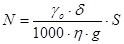
где N - число аппаратов;
S - часовая программа выпуска, м2/ч;
d - толщина наносимого слоя, мм;
go - плотность покрытия, кг/м3;
h - коэффициент использования металла металлизатором;
g - производительность металлизационного аппарата, кг/ч.
Определение расчетной скорости осевого перемещения трубы для получения покрытия заданной толщины производится по формуле:
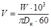
где V - скорость осевого перемещения трубы, м/мин;
Dн - диаметр трубы, мм;
W - коэффициент, учитывающий годовую производительность, условный диаметр труб, режим работ.
При вращательно-поступательном движении трубы покрытие накосится каждым металлизатором в виде спиральной полосы шириной 17-21 мм. Толщина однослойного покрытия может составлять от 50 до 200 мкм.
При металлизации труб остаются незащищенными концы труб длиной 15 - 20 мм с двух сторон под монтажную сварку.
Нанесение металлизационного алюминиевого покрытия в трассовых условиях осуществляется с помощью ручных металлизационных аппаратов газопламенного типа МГИ-4 или электродугового марки ЭМ-14.
Расстояние от металлизатора до поверхности трубы должна составлять 70-100 мм, толщина покрытия - 200 мкм.
Перед нанесением металлизационного алюминиевого покрытия в монтажных условиях подготовка поверхности дробеструйным способом должна осуществляться с той же тщательностью, что и в заводских условиях. Разрыв во времени между подготовкой поверхности и металлизацией этой поверхности должен составлять не более 0,5 ч в сырую погоду (работы проводятся под навесом) и 3 ч в сухую погоду.
В качестве источника сжатого воздуха для дробеструйного аппарата и металлизатора могут быть использованы передвижные компрессорные станции.
При проведении работ в монтажных условиях при температуре ниже +5°С необходимо поверхность металлизируемого участка трубы предварительно прогреть до 80-100°С открытым пламенем горелки, после чего немедленно наносить металлизационное покрытие.
Контроль качества металлизационного алюминиевого покрытия должен осуществляться в соответствии с ТУ 69-220-82.
Приложение 3
Условные обозначения к расчету компенсаторов и номограмм, помещенных на листах 43-51
Дн - наружный диаметр трубопровода, мм;
d - толщина стенки трубы, мм;
L - раcстояние между неподвижными опорами, м;
l1, l2, l3 - длины канального участка, м;
Н - вылет компенсатора, м;
В - створ компенсатора, м;
Dt - разность между максимальной расчетной температурой теплоносителя и расчетной температурой наружного воздуха, принимаемая при проектировании систем отопления, °С;
D - расчетное тепловое удлинение, мм;
a - коэффициент линейного расширения трубной стали, мм/м.гр.;
Р - сила упругой деформации, кг;
s - допускаемое изгибающее компенсационное напряжение, кг/см2;
1/b - коэффициент приведения длины, м.
Примеры расчетов П-образных компенсаторов (рис. 14-21)
I. П-образный компенсатор
Дн = 57 мм; d = 3 мм.
Температура теплоносителя 150°С.
Температура наружного воздуха 20°С.
Dt = 170°С.
L = 20 м.
s = 1100 кг/см2.
1. Определяем расчетное тепловое удлинение:
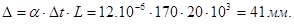
2. Принимаем вылет компенсатора равным створу В = Н.
3. По соответствующей кривой на рис. 14 находим Н = 1,25 м.
4. По кривой Р определяем силу упругой деформации Р = 118 кг.
5. Размер створа компенсатора по условию В = Н = 1,25 м.
6. Длину канальных участков, примыкающих к компенсатору, определяем по формуле
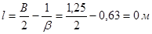
Конструктивно принимаем канальный участок длиной 1,5 м.
Таблица величин 1/b
|
Условный проход трубы Ду, мм |
50 |
70 |
80 |
100 |
|
Толщина стенки трубы, мм |
3; 3,5 |
3; 4 |
3; 4 |
3; 4 |
|
Величина 1/b, м |
0,63; 0,66 |
0,75; 0,81 |
0,82; 0,90 |
0,9; 0,97 |
Таблица величин 1/b (продолжение)
|
Условный проход трубы Ду, мм |
125 |
150 |
200 |
250 |
300 |
350 |
|
Толщина стенки трубы, мм |
3,5; 4 |
5 |
7 |
7; 8 |
8 |
9 |
|
Величина 1/b м |
1,05; 1,08 |
1,30 |
1,60 |
1,78; 1,84 |
2,01 |
2,24 |
Таблица величин 1/b (продолжение)
|
Условный проход трубы Ду, мм |
400 |
450 |
500 |
|
Толщина стенки трубы, мм |
7; 9 |
7; 9 |
8; 9 |
|
Величина 1/b |
2,25; 2,38 |
2,37; 2,50 |
2,60; 2,70 |
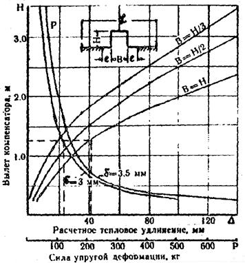
Рис. 14. Номограмма для расчета П-образного компенсатора трубопроводов Ду=50 мм
Рис. 15. Номограмма для расчета П-образного компенсатора трубопроводов Ду=70 мм
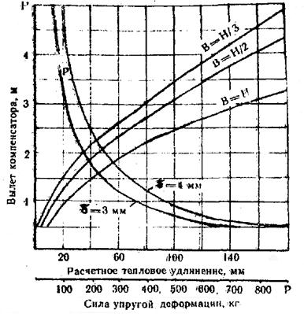
Рис. 16. Номограмма для расчета П-образного компенсатора трубопроводов Ду=80 мм
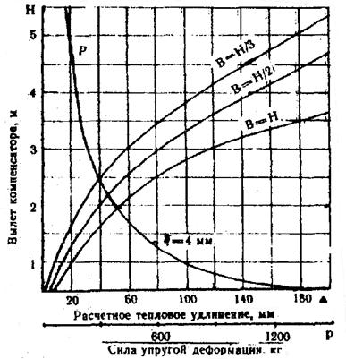
Рис. 17. Номограмма для расчета П-образного компенсатора трубопроводов Ду=100 мм
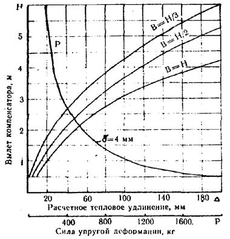
Рис. 18. Номограмма для расчета П-образного компенсатора трубопроводов Ду=125 мм
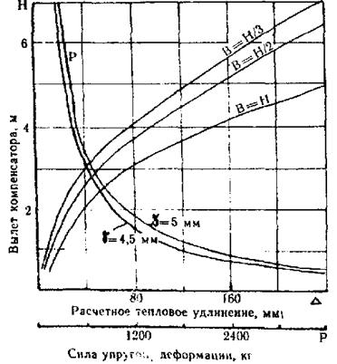
Рис. 19. Номограмма для расчета П-образного компенсатора трубопроводов Ду=150 мм
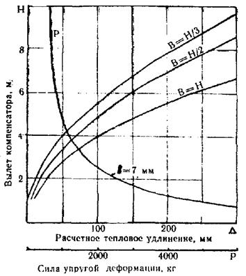
Рис. 20. Номограмма для расчета П-образного компенсатора трубопроводов Ду=200 мм
Рис. 21. Номограмма для расчета П-образного компенсатора трубопроводов Ду=250 мм
II. Г-образный поворот трубопроводов
Дн=219 мм, d=7 мм.
Температура теплоносителя 150°С.
Температура наружного воздуха 20°С.
Dt = 170°С.
L1 = 20 м.
L2 = 40 м.
s = 600 кг/см2.
Поворот трассы под прямым углом, длины канальных участков приняты разными.
1. Определяем тепловое удлинение первого колена: действительное
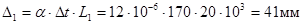
расчетное
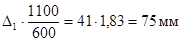
2. По кривой для Дн= 219 мм на рис. 23 при величине D = 75 мм определяем длину канального участка l2=7,5 м.
3. Определяем тепловое удлинение второго колена: действительное
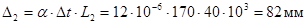
расчетное
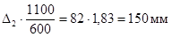
4. По кривой для Дн = 219 мм на рис. 23 при величине D = 150 мм определяем длину канального участка l1 = 11,5 м.
III. Z-образный участок трубопроводов
Дн = 76 мм; d = 3 мм.
Температура теплоносителя 150°С.
Температура наружного воздуха 20°С.
Dt = 170°C
L = 30 м
s = 1100 кг/см2
1. Определяем тепловое удлинение
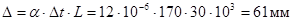
2. По кривой для Дн = 76 мм на рис. 24 находим длину среднего канального участка l2. При значении D = 61 мм, l2 = 5 м.
3. Вычисляем приведенную длину участка - l2
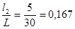
4.
По графику, на рис. 24 для 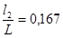 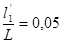
5.
Подставляя величину 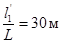 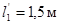
6.
Вычитая значение 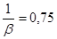
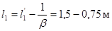
Таким образом, согласно расчетам определились длины канальных участков.
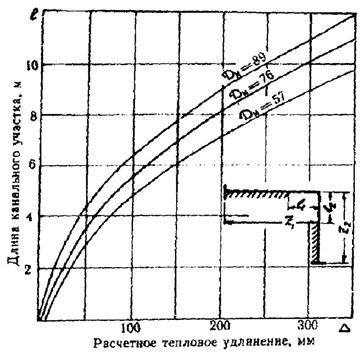
Рис. 22. Номограмма для расчета канальных участков Г-образного поворота трубопроводов Ду = 50-80 мм
Рис. 23. Номограмма для расчета канальных участков Г-образного поворота трубопроводов Ду = 100-250 мм
Рис. 24. Номограмма для расчета канальных участков Z-образного поворота трубопроводов Ду = 50-80 мм
Рис. 25. Номограмма для расчета канальных участков Z-образного поворота трубопроводов Ду = 100-250 мм
Приложение 4
ПАСПОРТ ТЕПЛОВОЙ СЕТИ
Форма № TC-1
|
Теплосеть_________________________________________________________________ (название энергоуправления или энергосистемы) Эксплуатационный район____________________________________________________ Магистраль №______________________________________________________________ ________________________________Паспорт №_________________________________ Вид сети__________________________________________________________________ (водяная, паровая) Источник теплоснабжения____________________________________________________ (ТЭЦ, котельная) Участок сети от камеры № _____________________ до камеры №__________________ Название проектной организации и номер проекта_______________________________ ___________________________________________________________________________ Общая длина трассы _______________________ м Теплоноситель ________________________________________ Расчетные параметры: давление ___________________________ кгс/см2, температура __________________ °С Год постройки ______________________ Год ввода в эксплуатацию________________ Балансовая стоимость ___________________________ руб. |
Приложение 5
ТЕХНИЧЕСКАЯ ХАРАКТЕРИСТИКА
1. Трубы
|
Наименование участка трассы |
Наружный диаметр и длина трубы |
Толщина стенки трубы, мм |
ГОСТ и группа трубы |
№ сертификата трубы |
Емкость трубы, мм |
Примечание |
|||||||
|
подающей |
обратной |
подающей |
обратной |
подающей |
обратной |
падающей |
обратной |
подающей |
обратной |
||||
|
мм |
м |
мм |
м |
||||||||||
2. Механическое оборудование
|
№ камеры |
Задвижки |
Компенсаторы |
Дренажные клапаны |
Воздушники |
Насосы |
Перемычки |
Примечание |
||||||||||
|
Д, мм |
Количество, шт. |
Д, мм |
Количество, шт. |
Д, мм |
Количество, шт. |
Д, мм |
Количество шт. |
Тип |
Количество, шт. |
Электрическая мощность, кВт |
Вид запорного органа |
Диаметр запорного органа, мм |
|||||
|
Чугунных |
стальных |
||||||||||||||||
|
с ручным приводом |
с электроприводом |
с гидроприводом |
|||||||||||||||
3. Каналы
|
Наименование участка трассы |
Тип канала (или № чертежа) |
Внутренние размеры, мм |
Толщина стенки, мм |
Конструкция перекрытия |
Длина, м |
|
|
высота |
ширина |
|||||
4. Камеры
|
Внутренние размеры, мм |
Толщина стенки, мм |
Конструкция перекрытия |
Наличие неподвижной опоры |
Наличие дренажа (выпуска) |
Материал стенки |
||||
|
высота |
длина |
ширина |
|||||||
5. Лицо, ответственное за безопасное действие трубопровода
|
№ и дата приказа о назначении |
Должность, фамилия, имя и отчество |
Подпись ответственного лица |
6. Реконструктивные работы и изменения в оборудовании
|
Дата |
Характеристика работ |
Должность, фамилия и подпись лица, внесшего изменение |
7. Записи результатов освидетельствования трубопроводов
|
Дата освидетельствования |
Результаты освидетельствования |
Срок следующего освидетельствования |
8. Контрольные вскрытия
|
Место вскрытия |
Дата |
Назначение вскрытия |
Результаты осмотра и № акта |
9. Неподвижные опоры в канале
|
№ камер, между которыми размещен канал |
Привязка к камере, № |
Конструкция |
Примечание |
10. Специальные строительные конструкции (щиты, дюкеры, мостовые переходы)
|
Наименование |
Длина, м |
Описание или № типового чертежа |
11. Изоляция
|
Наименование участка трассы (№ камеры) |
Изоляционный материал |
Толщина изоляции |
Наружное покрытие |
Материал антикоррозионного слоя |
|
|
материал |
толщина слоя, мм |
||||
|
|
|
|
|
|
|
12. Эксплуатационные испытания
|
Характер испытания |
Дата |
Результаты испытания и № акта |
|
|
13. Список приложений
|
___________________________________________________________________________ ___________________________________________________________________________ ___________________________________________________________________________ ___________________________________________________________________________ Исполнитель ____________________________ (должность, ф.и.о. подпись) ___________________________________________________________________________ Представитель теплосети района ____________________________ (должность, ф.и.о. подпись) Дата ________________________________ |
Список литературы
1. СНиП II-Г.10-73* (СНиП II-36-73*) Тепловые сети. Нормы проектирования.
2. СНиП 3.05.03-85 Тепловые сети.
3. СНиП III-4-80 ч.III. Правила производства и приемки работ. Гл.4. Техника безопасности в строительстве.
4. Серия 4.903.4. Бесканальная прокладка тепловых сетей с изоляцией из битумоперлита при диаметре трубопроводов 50-500 мм.
5. Бесканальные теплопроводы. Расчет и проектирование. Справочник под редакцией Р.М. Сазонова. Киев. «Будiвельник». 1985г.
6. Нормы тепловых потерь при бесканальной прокладке тепловых сетей. ВСН 399-79/ММСС СССР.
7. Рекомендации по совершенствованию басканальной прокладки тепловых сетей. Отчет ЦНИИЭПсельстроя. М., 1983г.
8. Рекомендации по выпуску теплопроводов с изоляцией на основе смолы СФЖ-514 (технологический регламент), ЦНИИЭПсельстрой.
9. Указания по применению осевых волнистых компенсаторов в условиях сельского строительства ЦНИИЭПсельстрой, 1983г.
10. Альбом узлов для прокладки теплосетей с применением волнистых компенсаторов, ЦНИИЭПсельстрой, 1983г.
111. А.А. Лямин, А.А. Скворцов Проектирование и расчет конструкций тепловых сетей М., 1966г.
12. Рекомендации по конструкции и технологии изготовления и монтажа теплоизоляции стыков индустриальных теплопроводов с изоляцией из пенопласта и наружной оболочкой из полиэтиленовых труб. НИИМосстрой Главмосстроя. М., 1963 г.
13. Манжеты соединительные термоусаживающиеся уплотняющие. ТУ 95-1378-85.
СОДЕРЖАНИЕ